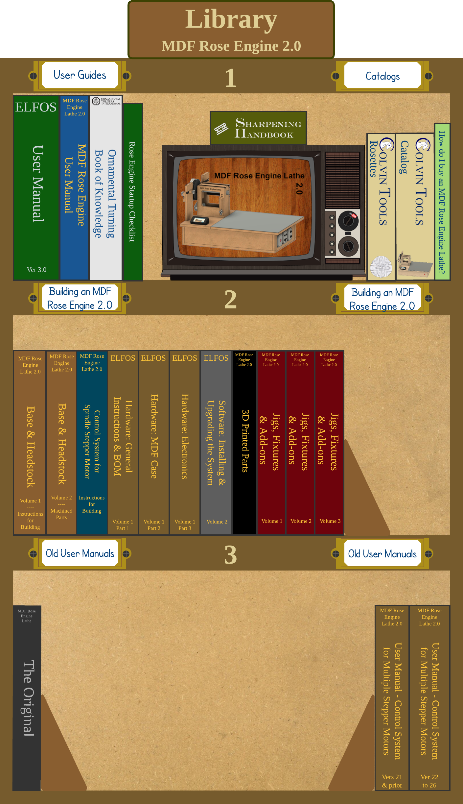

This library provides documentation about the MDF Rose Engine Lathe 2.0: how to build one, how to use it, and how to maintain it..
Questions or comments? Contact us at
ColvinTools@Gmail.com
Disclaimers